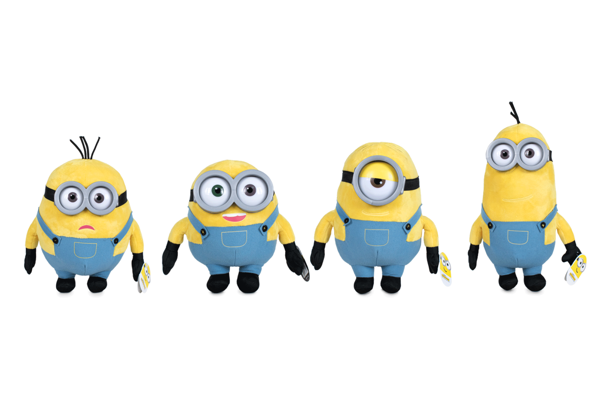

Scroll through the questions and choose an option for what matches closest to your answer in order to find out which minion you are! You may have to click twice sometimes to secure your choice.

Source: Play by Play CC BY
What is your favorite fruit?
Who is your favorite character out of these choices?